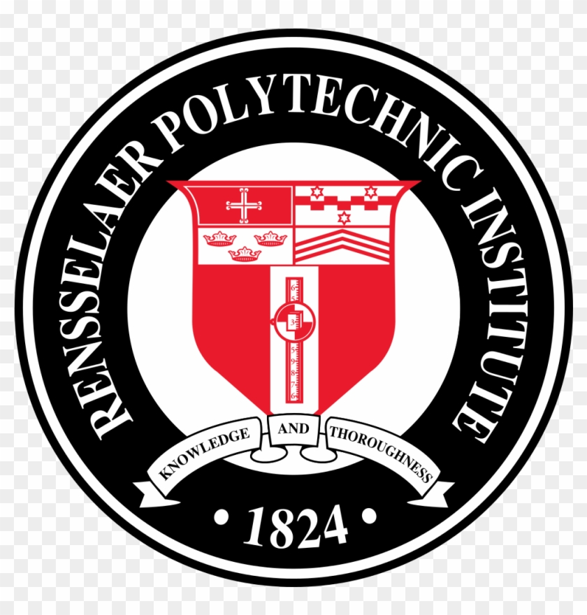

Md Zabirul Islam (he/him)
Md Zabirul Islam is a Doctoral Student in Computer Science at School of Science, Rensselaer Polytechnic Institute, currently serving as a Graduate Research Assistant at the Wang-AXIS: AI-based X-ray Imaging System (AXIS) Research lab under the supervision of Dr. Ge Wang. His research focuses on Large Language Models (LLMs), Multimodal Foundation Models, and Generative AI, with an emphasis on medical imaging, structured clinical reasoning, and AI-enabled education systems. He specializes in developing reliable, interpretable, and deployable AI systems that integrate medical images, clinical text, and structured representations for healthcare decision support and scalable STEM education.
Internship Availability — Summer 2026
I am actively seeking internship opportunities for Summer 2026 in AI/ML Research. I am particularly interested in research roles focused on Large Language Models (LLMs), Multimodal Foundation Models, and Generative AI. I am eager to contribute to research-driven teams at leading AI labs, industry research groups, and innovative startups working on reliable, scalable, and deployable AI systems.
Biography
I have always been motivated by the goal of using artificial intelligence to address real-world societal problems. This motivation took shape during my undergraduate studies in Bangladesh, when the country was ranked among the most corruption-affected nations globally. In response, I focused my undergraduate thesis on public-sector corruption analysis, where I developed a modified K-means clustering framework using perception-based survey data to uncover structural patterns of corruption. Grounded in publicly reported indicators, including the 2018 Corruption Perceptions Index, this work highlighted systemic weaknesses in the financial sector and limitations of existing anti-corruption mechanisms, shaping my interest in applied machine learning for policy-relevant analysis.
Shortly after completing my bachelor’s degree, the global COVID-19 pandemic marked a turning point in my research trajectory. During nationwide lockdowns, I became deeply engaged in developing AI-based diagnostic tools to support healthcare systems under unprecedented strain. I worked on deep learning models for COVID-19 detection from chest X-ray images, leading to multiple peer-reviewed publications. One of these studies has received over 800 citations. This period reinforced my commitment to building reliable, high-impact AI systems for real-world clinical use.
Throughout this journey, I have had the privilege of collaborating with accomplished researchers across academia and industry, including Prof. Ge Wang, Dr. Chuang Niu, Dr. Md. Milon Islam, Dr. Tianfan Fu, Prof. Weiping Ding, and Prof. M.M.A. Hashem. These collaborations have resulted in a body of peer-reviewed research spanning medical AI, multimodal learning, clinical decision support, and AI-enabled education, published in venues such as Informatics in Medicine Unlocked, BenchCouncil Transactions on Benchmarks, Standards and Evaluations, SN Computer Science, Visual Computing for Industry, Biomedicine, and Art, and major international conferences and workshops. Collectively, this work has accumulated 1,170+ citations, with an h-index of 7 and an i10-index of 4.


Building on this foundation, my research has evolved toward developing reliable and interpretable AI systems that bridge methodological rigor with practical deployment. I have contributed to deep learning models for medical image analysis, large language models for structured clinical reasoning, and multimodal foundation models that integrate vision, language, and structured representations. My current research interests focus on Large Language Models (LLMs), Multimodal Foundation Models, and Generative AI, with applications in healthcare and scalable STEM education.
Alongside my research, I remain actively engaged in academic service and teaching. I currently serve as a peer reviewer for Medical Physics journal, having reviewed 5+ research manuscripts in medical imaging and applied AI. From 2021 to 2023, I worked as a Lecturer at Daffodil International University , where I taught undergraduate courses in Numerical Methods, Digital Image Processing, Algorithm Analysis and Design, and Artificial Intelligence. During this time, I instructed 1,000+ students and mentored 30+ students in research-oriented projects. These experiences continue to inform my approach to scholarly service, research mentorship, and teaching alongside my doctoral research.
Recent Publications
- Md Motaleb Hossen Manik, W. Muldowney, Md Zabirul Islam, and Ge Wang. “Development of an Optically Emulated Computed Tomography Scanner for College Education.” In Visual Computing for Industry, Biomedicine, and Art , 2026.
- Md Motaleb Hossen Manik, Md Zabirul Islam, and Ge Wang. “SlideChain: Semantic Provenance for Lecture Understanding via Blockchain Registration.” In arXiv , 2025.
- Md Zabirul Islam, Md Motaleb Hossen Manik, and Ge Wang. “ALIVE: An Avatar-Lecture Interactive Video Engine with Content-Aware Retrieval for Real-Time Interaction.” In arXiv , 2025.
- Md Motaleb Hossen Manik, Md Zabirul Islam, and Ge Wang. “N-ReLU: Zero-Mean Stochastic Extension of ReLU.” In arXiv , 2025.
- Md Zabirul Islam and Ge Wang. “Avatars in the Educational Metaverse.” In Visual Computing for Industry, Biomedicine, and Art , 2025.
- Chuang Niu, Md Sayed Tanveer, Md Zabirul Islam, Parisa Kaviani, Qing Lyu, and others. “Development and Validation of a Dynamic-Template-Constrained Large Language Model for Generating Fully-Structured Radiology Reports.” In arXiv , 2024.
- Ling Yue, Jonathan Li, Sixue Xing, Md Zabirul Islam, Bolun Xia, Jintai Chen, and Tianfan Fu. “TrialDura: Hierarchical Attention Transformer for Interpretable Clinical Trial Duration Prediction.” In NeurIPS 2024 Workshop on AI for New Drug Modalities , 2024.
Education
-
Doctor of Philosophy (PhD) in Computer Science, Spring 2024 - Present
 Rensselaer Polytechnic Institute, Troy, USA -
Master of Science (MSc) in Computer Science, Fall 2025
Rensselaer Polytechnic Institute, Troy, USA -
BSc in Computer Science and Engineering, Mar 2020
Khulna University of Engineering & Technology, Bangladesh
Experience
-
Graduate Research Assistant, June 2025 - Present
Rensselaer Polytechnic Institute, Troy, USA -
Graduate Teaching Assistant, January 2024 - May 2025
Rensselaer Polytechnic Institute, Troy, USA -
Lecturer, February 2021 - December 2023
 Daffodil International University, Bangladesh
Daffodil International University, Bangladesh
News
| January 2026 | Our journal article "Development of an Optically Emulated Computed Tomography Scanner for College Education" has been published in Visual Computing for Industry, Biomedicine, and Art. Full Text |
| December 2025 | Successfully completed my M.Sc. degree in Computer Science at Rensselaer Polytechnic Institute. |
| December 2025 | Presented a poster on my master’s research project, “ATOMIC: Avatar-based Teaching for an Optimized Medical Imaging Course,” supervised by Prof. Ge Wang. The project introduces an AI-driven, avatar-based educational system designed to enhance scalability, interactivity, and multilingual delivery in medical imaging education. |
| December 2025 | New preprint "SlideChain: Semantic Provenance for Lecture Understanding via Blockchain Registration" released on arXiv. arXiv |
| December 2025 | New preprint "ALIVE: An Avatar-Lecture Interactive Video Engine with Content-Aware Retrieval for Real-Time Interaction" released on arXiv. arXiv |
| November 2025 | New preprint "N-ReLU: Zero-Mean Stochastic Extension of ReLU" released on arXiv. arXiv |
| October 2025 | Served as a peer reviewer for a manuscript submitted to the Medical Physics journal. |
| June 2025 | Our journal article "Avatars in the Educational Metaverse" has been published in Visual Computing for Industry, Biomedicine, and Art (vol. 8, no. 1). |
| February 2025 | Our conference paper "Unifying Sentiment Analysis and Emotion Recognition for Bangla Text: A Hybrid Approach" has been presented at the 2025 International Conference on Electrical, Computer and Communication Engineering (ECCE), published by IEEE. |